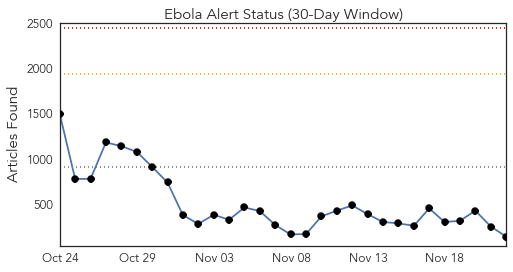
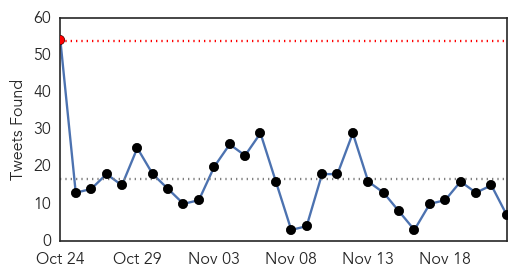
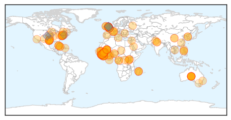
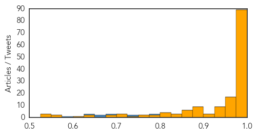

Toggle navigation
Early Warning
Daily Alerts
Ebola
Nov 22, 2014
Compare to:
-
Dengue Fever
Hemmorhagic Fever
Mold/Fungal Infection
Influenza
Meningitis
Pertussis / Whooping Cough
Middle East Respiratory Syndrome
Cholera
Hepatitis
Chikungunya
Yellow Fever
Bubonic Plague
West Nile Virus
Swine Flu
Measles
Unknown
Mumps
30 Day Trends
Web: 0
alerts
, 0
warnings
Twitter: 1
alerts
, 0
warnings
Top Articles:
Showing top 50 articles...
1.000
Latest Ebola News: WHO declares Democratic Republic of Congo Ebola-free
1.000
New Case Confirmed, 2 More Suspected
1.000
Bishop at UN Ebola meeting warns against 'acts of discrimination'
1.000
REGION: Staying safe while treating Ebola
1.000
the edge of knowledge
1.000
Voices from the front lines: How nurses feel about Ebola
1.000
Hope in Liberia, anxiety in Mali as Ebola battle rages
1.000
Mali: New Ebola case confirmed, 2 more suspected
1.000
New Ebola case confirmed in Mali
1.000
Ebola crisis now 'stable' in Guinea, WHO says
1.000
Ebola: Separating science from myth
1.000
Hope in Liberia, anxiety in Mali as Ebola battle rages
1.000
Ebola Silently Rages On
1.000
World Health Organization: Democratic Republic of Congo is Ebola-free
1.000
Machel urges African leaders to seek help on continent
0.999
Ebola-infected Cuban doctor brought to Geneva
0.999
Quarantining man from Liberia right step: expert
0.999
UN warns Ebola still far from over
0.999
Ebola: Can It End Next Summer?
0.999
Liberia Hopeful of Halting Ebola by Year End
0.999
CDC Says Cases Of Ebola Virus In Liberia Decreasing, Thanks To Global Effort
0.999
We can end Ebola in 2015, says Ban
0.999
Ebola Outbreak Could Be Curbed By 2015, Says UN Secretary General Ban Ki-Moon
0.999
Ebola death toll rises to 5,459; Cuban doctor 'stable'
0.999
Hope in Liberia, worry in Mali as Ebola battle continues in West Africa
0.999
TNS - The News on Sunday
0.999
Mali confirms new Ebola case; toll 5
0.999
In Presidential Statement, Security Council Hails Successes of Scaled-up Ebola Response, Calls for Stronger Coordination to Identify Gaps, Trace Contacts - Liberia
0.999
Mali records new Ebola case, linked to dead nurse
0.998
Ebola death toll rises but Cuban doctor is ‘stable’
0.998
No time to lose in battle against Ebola, says UN's Ban Ki-moon
0.998
New York Patient Returning from West Africa Negative for Ebola But Remains Confined
0.998
UN Hopeful Of Ebola Outbreak's End By Mid-2015
0.997
Ebola cases no longer rising in Guinea, Liberia, UN health agency reports
0.997
Hope in Liberia, anxiety in Mali as Ebola battle rages
0.997
Outbreak of the plague in Madagascar leaves dozens dead
0.997
NHS Staff Head To Sierra Leone To Treat Ebola
0.996
Human Trail of Experimental Ebola Vaccine Begins
0.996
Ebola won’t get you out of class
0.996
Outbreak of the plague in Madagascar leaves dozens dead
0.996
Outbreak of the plague in Madagascar leaves dozens dead
0.996
Cuban doctor with Ebola in stable yet worrying condition
0.996
Outbreak of the plague in Madagascar leaves dozens dead
0.996
Outbreak of the plague in Madagascar leaves dozens dead
0.996
UK Sends 30 Volunteers to West Africa to Help Contain Ebola
0.996
CORRECTED-(OFFICIAL)-INTERVIEW-Saudi Arabia tackles MERS virus, still hunting source
0.995
Ebola: Ban hopeful of outbreak’s end by mid-2015
0.995
Ban Ki-moon: Ebola outbreak can be ended in 2015 - Panorama
0.995
New Ebola Case Confirmed, 2 More Suspected
0.995
NHS volunteers deployed to fight Ebola in Sierra Leone - Sierra Leone
Top Tweets:
0.779
Ebola It’s the public health measures that will end the outbreak not treatment as important as treatment is. Do your part to StopEbola
0.725
RT: WHO says ~ 500 people in Mali & Guinea have been exposed to an Ebola infected imam whose case had been misdiagnosed ht…
0.683
RT: Still not doing enough vs Ebola. 533 new cases last wk in S. Leone–most of outbreak. In Guinea village at heart of o…
0.674
RT: EbolaResponse: Here's latest map of Ebola outbreak in WestAfrica with stats for Liberia Guinea & Sierra Leone
http://t.co/U5M…
0.674
RT: EbolaResponse: Here's latest map of Ebola outbreak in WestAfrica with stats for Liberia Guinea & Sierra Leone
http://t.co/U5M…
0.627
RT: ICYMI: MSF evacuates staff worker from Mali to Madrid. Spanish medical worker had Ebola exposure. Fingers crossed. ht…
0.583
Back in UK for 4 days then straight back to W Africa for 6 weeks. Sad to be away from home for Christmas but the ebola battle continues!
Web/News Articles

Tweets

Article Locations

Article Confidences
